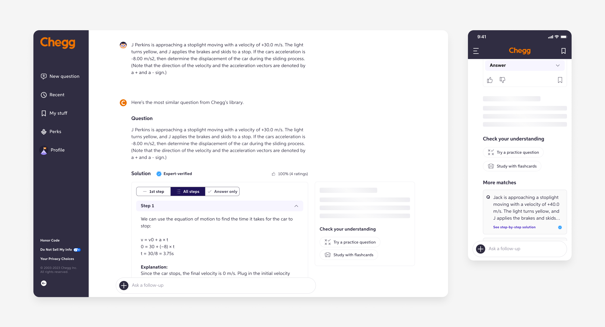

Dynamic Follow-Up Suggestion
UX Design · 2024
Overview
Chegg, a leading higher-education platform with millions of subscribers, revamped its Q&A product in 2023 to leverage generative AI for personalized study help. One key challenge in the AI-powered conversational learning experience was the low engagement in asking follow-up questions. As the sole UX designer, I introduced a feature that significantly improved engagement metrics.
My Contributions
- Led the design of a new feature, resulting in a 4.67% increase in number of subscribers who ask follow-up questions.
- Improved the information hierarchy to accommodate new functionalities seamlessly. Orchestrated user interviews and usability testing to inform design decisions.
Duration
11 Weeks
My Role
Sole UX Designer
UX Researcher
Team
UX Designer (Me)
UX Content Designer
Product Manager
ML and Software Engineers
Learning Science Designer
Tools
Figma
FigJam
UserTesting.com
Confluence

Outcome
4.67%
Increase in subscribers who ask follow-ups
3.93%
Increase in follow-ups per subscriber
Context
The new chat functionality was underutilized by students
Historically, most students used Chegg to search for homework solutions and left the platform without further engagement. One major reason that Chegg revamped the legacy product to a chat experience powered by AI since 2023 was to provide more personalized and engaging Q&A experience, especially through enabling students to ask follow-up questions to homework solutions.

In the new experience, after users submit a homework question and receive a solution—either from archived expert answers or the LLM—they can continue to ask follow-up questions to deepen their understanding. These follow-ups are seamlessly answered by the LLM.
However, asking follow-up questions was not yet a natural behavior among students using Chegg. Data revealed that only 19% of user inputs focused on digging deeper into the same question, indicating significant room for improvement.
19%
of user inputs are follow-ups.
Product brief
How to enhance user engagement in asking follow-up questions for homework problems?
To tackle the challenge of low engagement with follow-up questions in Chegg's AI-powered chat experience, we kicked off the project by identifying and aligning on the target users, their needs, and the business goals.
👥 Target Users
Chegg subscribers who have been allocated to the new AI-powered chat experience, primarily STEM college students in the U.S.
⛳ User Need
Subscribers are either unaware of or underutilizing the follow-up functionality within the AI-powered chat experience, a feature designed to enhance learning effectiveness based on learning science. Previous user research also indicates a desire among students to understand the process behind solving homework.
💼 Business Goal
Increase the percentage of subscribers who ask follow-up questions and the number of follow-ups asked by each subscriber.
Strategies & early ideas
Dynamic follow-up suggestions for guided experience
I spearheaded the ideation process to enhance user engagement with the follow-up functionality, focusing on two key areas:
- Increasing awareness: Ensuring users discover the feature, as it could easily be overlooked due to their established usage patterns on Chegg.
- Reducing friction: Assisting users in overcoming the learning curve associated with using the feature.
While my teammate worked on onboarding solutions, I concentrated on returning users. My design solutions were guided by these strategies:
Prominent
Enhancing proximity and discoverability of follow-up entry points.
Effortless
Minimizing user effort required to engage with follow-up functionality.
Show vs. Tell
Guiding users through the learning curve by showing potential questions they could ask the AI.
To help the team strategize and prioritize, I categorized my design ideas into three types:
Type I: Follow-up suggestions based on problem types
Suggestions tailored to problem types—Facts, Concepts, Procedures, Processes, or Principles—with guidance from learning science. For example:
- For a factual question like “What is the formula for calculating kinetic energy?”, the system might suggest asking, “Can you give me an example?”
- For a process question like “How does the water cycle work?”, it might recommend, “Can you explain in more detail?”
Type II: Content-specific follow-up suggestions
Suggestions dynamically generated by the LLM based on the solution's content with guidance from learning science, providing more specific and contextual prompts. For example:
- If the homework question is “At the end of Jan, Mineral Labs had an inventory of 735 unites, which cost 8% per unit to produce. During Feb the company produced 700 unites at a cost of $12 per unit. If the firm sold 1100 unites in Feb, what was the cost of goods sold?”, the system might suggest asking “How did you determine which units were sold first and why?”
Type III: Key-term-based follow-up suggestions
Suggestions derived from key terms in the solution, selected by the LLM with guidance from learning science. For example:
- If the Q&A is about the steps of metabolism, and the solutions states “The first step in metabolism is the ingestion of food. This is where you consume food which is then broken down into smaller molecules during digestion.” The system might highlight “molecules” in the solution and prompt users to ask to learn more about the term.

While content-specific and key-term-based suggestions provide more personalized and dynamic learning experiences, we prioritized the first type because it had a balanced trade-off between personalization and delivery speed. This approach allowed us to launch the feature sooner, while still delivering meaningful value. We planned to explore the more advanced types of suggestions in future iterations to further enhance the learning experience.
Wireframing
Follow-up suggestions based on solution types
Where should the feature be placed?
I considered three potential placement options for the feature: in the right rail (A), inline under each step (B), or grouped with the chat input box (C). After evaluating these options, I chose the right rail placement (A). It was more prominent and allowed for easier layout of multiple prompts compared to the other options. Grouping the follow-up suggestions with the chat input box (C) was also an appealing choice due to the proximity, which could enhance the connection between the suggestions and the chat input field. However, this approach presented a challenge: the suggestions would become less relevant if users scrolled up to view a different homework problem in the chat.

Refining the interaction
Once the placement was determined, I iterated on the interaction design to ensure the feature was both intuitive and easily discoverable. To enhance discoverability, I added a visual affordance to the right side of each step in the solution. When users hover over it, follow-up suggestions appear seamlessly.
To showcase the end-to-end flow to stakeholders, I built an interactive prototype that integrates both onboarding tooltips for follow-ups and dynamic follow-up suggestions.
Project pivot
We Have More Time for This Project — What's Next?
Working at Chegg meant navigating ambiguity and staying adaptable, especially as the company had to move quickly in response to the fast-evolving AI landscape. When the program priorities shifted, the project was temporarily paused but later resumed. With the extension of our timeline, we reassessed our approach and revisited some of the ideas we had put on hold—specifically, the option of suggesting follow-up questions tailored to the content of the solutions.
Rather than sticking with short, preset suggestions, we aimed to provide something more specific and dynamic, personalized to the exact homework problem a user was tackling. Through prompt engineering, the LLM would analyze both the homework problem and its solution, then generate three follow-up questions designed to help the user dive deeper into the topic or broaden their understanding.
wireframing
Information hierarchy
How to maintain clear information hierarchy as new features and content are added?
If new functions and content are added to the interface without considering the overall user experience, the product could quickly become overwhelming and frustrating. One of the biggest challenges I faced was structuring the layout to align with users' mental models.
On the page, below the homework solutions, Chegg already suggested several Next Best Actions for users to continue engaging, such as “Let’s practice,” “Give me an example,” and “Send to expert.” At the same time, we received feedback from students asking for more solutions to be displayed, rather than just one, so they could compare options and find the best fit. As a result, I was tasked with adding similar solutions from the archive to the page to better serve the user's primary goal on Chegg: finding the right solution. If this goal wasn’t met, students were less likely to engage with other features, like asking follow-up questions.
With the follow-up suggestions also being added to the page, the potential for the experience to become cluttered and overwhelming was high. If the team simply added new elements without thoughtful organization, the result would be a chaotic user interface.

The previous solution layout had a disorganized information hierarchy, with functions scattered throughout the interface.
What’s the right information hierarchy? Let’s talk to users to find out.
What should the information hierarchy be based on? Should it prioritize actions, and if so, how do we determine which actions to prioritize? Initially, the PMs argued that follow-up questions should be the top priority, as we wanted to place this feature in front of users to gauge its performance. They suggested that reviewing similar solutions and sending questions to experts were secondary actions. While this was a reasonable proposal, we already knew from user feedback that these two “deprioritized” actions were important to students. I felt that validating assumptions shouldn’t come at the cost of potential usability issues.
To address this uncertainty, I collaborated with one of my teammates to plan and conduct user research to understand users' mental models when seeking help with homework on Chegg. In the study, we presented Chegg’s current design and asked students to find the best solution for a homework problem. Here are the key findings:
- Students Check Questions First, Then Solutions. Our assumption about the students' order of actions was correct – they first check the question, then move on to the solutions. Students typically compare the problem to similar questions, often relying on ratings and bookmarks.
- When Unsatisfied, 75% of Students Search for Similar Questions, While 42% Ask Experts. When students weren’t satisfied with the Q&A, 75% would search for closely related questions as their initial step, while 42% would ask experts for an exact answer as either a primary or secondary approach.
- For Clarification, Students Prefer Instant Resources Like Google or ChatGPT. Over half of the students mentioned using Google or ChatGPT for instant clarification when confused about part of the solution.
These insights revealed that the information hierarchy should align with the following order to match the users' mental model:
- Find the right question (browse multiple questions, send to expert)
- Find the right solution (skim through the solutions, check rating and number of bookmarks)
- Go deeper into the Q&A (Ask follow-up questions to the solutions or practice)
I designed the layout based on this hierarchy, with follow-up suggestions placed at the bottom. From both a UX and learning science perspective, this is the most ideal layout that matches the user's mental model and fosters effective learning. However, the PM still wanted the feature to be more prominent to better assess its performance, suggesting that the right rail would be a more effective placement. Although this didn't perfectly align with the user's mental model, I acknowledged that it was an option worth testing given the tradeoffs. Ultimately, the team agreed to test both variants in an A/B test.
Iterations
Keep refining the designs
Visual treatment for feature grouping
When presenting my design iteration to the UX team, one key suggestion I received was to group the follow-up suggestions with the existing Next Best Actions (e.g., "Let’s practice"), as both represent subsequent actions users can take. I went through multiple rounds of iteration, continuously evaluating the trade-offs of each option.
Option A - Group the follow-up suggestions and Next Best Actions under a single section, using a consistent visual treatment and sentence format.
- Pros: All buttons are visually consistent and unified.
- Cons: The visual treatment is plain and lacks appeal; the sentence format makes the Next Best Actions less concise.
Option B - Group them under one section while maintaining the original format for the Next Best Actions.
- Pros: Good balance between unification and prominence.
- Cons: If only one Next Best Action is present, users might mistakenly perceive it as the call-to-action (CTA) for the entire section.
Option C - Keep follow-up suggestions and Next Best Actions in two closely placed, separate sections.
- Pros: Maintains visual prominence and avoids misperception.
- Cons: Less visually consistent and connected.


Ultimately, Option C was selected, as it maintained visual prominence while avoiding misperception. Option B was ruled out due to the risk of creating confusion, while Option A was discarded because it clashed with our design strategy of keeping the feature visually prominent. A more minimalist visual treatment risked making the feature less engaging.
Choice of icons
I explored different icon options to find the one most relevant to the follow-up suggestion feature.
Spark icon: This icon is commonly used to represent AI. However, one of our content strategies was to focus on the value proposition of the feature—learning through chatting with AI—rather than overemphasizing the technology itself.
Arrow icon: While it suggests the action of "send," it doesn't clearly communicate the feature’s value proposition.
Chat icon: This icon directly relates to the value of the feature and is easily understood, conveying the concept of "conversation".
Since our design system only included a plain chat icon at the time, I designed a more illustrative chat icon to better align with the feature’s purpose and enhance the visual appeal.
What should happen when a follow-Up suggestion is selected?
Once a user selects a follow-up suggestion, what should happen next? Some stakeholders suggested that the follow-up question should automatically populate the chat input box, requiring users to click "send" to initiate the action, to demonstrate that users could also type in the box.
However, I argued that this would introduce unnecessary friction. Instead, I proposed that the follow-up suggestion should be sent directly upon selection. Based on the design strategies I had developed earlier, I believed that prioritizing ease of use would reduce friction, and that this interaction would be intuitive for users. Ultimately, I successfully persuaded the stakeholders to align with this approach.
Backend
Designing with generative AI
Prompt engineering
I worked closely with the learning science team and LLM engineers to refine the prompt strategy. Initially, we experimented with offering a set of predefined options (e.g., help me memorize, create an analogy, give an example) and allowed the LLM to choose the most appropriate one based on the given question. However, after conducting prompt engineering tests, we discovered that the more specific the instructions, the less relevant and lower quality the output became, as the LLM would attempt to follow the instructions too rigidly. As a result, we shifted to providing a more generic prompt, as follows:
Your goal is to provide suggestions of follow-up questions that a student might ask regarding a question and response you are helping them with original question and response context.
Write 3 follow-up questions, no longer than one sentence, tailored and relevant to the original question the student asked and the content of the answer they received. These follow-up questions should be from the perspective of a student, should be engaging and inviting for a student to ask, and span a variety of types of follow-up questions.
I estimated the typical length of follow-up questions generated by the LLM and set a character limit to ensure the output wouldn’t overwhelm the user or constrain the quality of the suggestions. The limit was added to the prompt as follows:
Each follow-up question should be brief and no longer than 120 characters.
Adoption of AI means less control
As we integrated generative AI into the product, we realized that we had less control over the output, which sometimes led to errors. I became more aware of potential failure points and proactively designed for possible scenarios, such as: What if it takes too long to generate follow-up suggestions? What if an error occurs and the generation fails? I made sure to address these cases within the design to ensure a smooth user experience.
Show the shimmer for the follow-up suggestions before the content is fully loaded. Hide the follow-up suggestion section if an error occurs.
Final Design and test result
A/B testing with two variants
The solution provides dynamic, contextually relevant follow-up suggestions to help students engage more meaningfully, encouraging them to move beyond quick answers and achieve deeper learning outcomes. When a student receives a homework solution from Chegg, they will be presented with three dynamic suggestions, generated by the LLM through prompt engineering. Upon selecting a suggestion, students will receive a tailored response from Chegg.
Feature highlights:
- Dynamic, context-aware follow-up suggestions
- Clean information hierarchy that matches with the user’s mental modal
- Improved discoverability through strategic visual treatment and placement
- Seamless, effortless interaction
Variant A - bottom placement
In variant A, the follow-up suggestions are placed inline at the bottom of the solutions. While this placement might appear less discoverable, it aligns closely with the user’s mental model—they typically consider asking a follow-up only after identifying the right question and solution to their homework problem. This alignment proved crucial, as this variant outperformed the alternative in the A/B testing. Notably, both variants successfully increased engagement with follow-ups.
Variant B - sticky right rail placement
Variant B features a more prominent placement, designed to ensure the new feature is highly visible and not easily overlooked by users. As users scroll through the screen, the follow-up suggestions remain visible, sticking to the right side of the solution as long as the solution body is in view. While this approach yielded positive results in the A/B testing, its performance was slightly lower compared to the other variant.
Responsive design